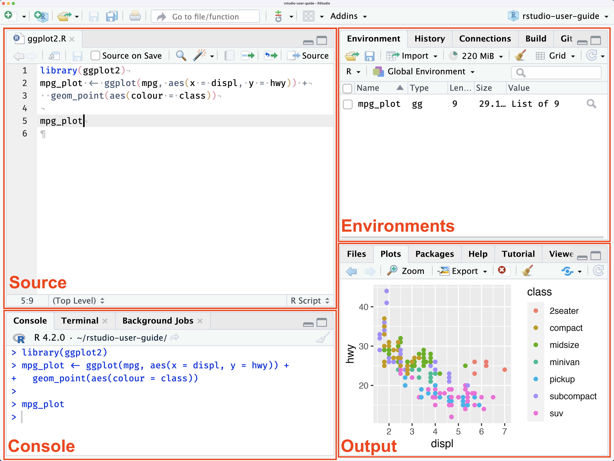
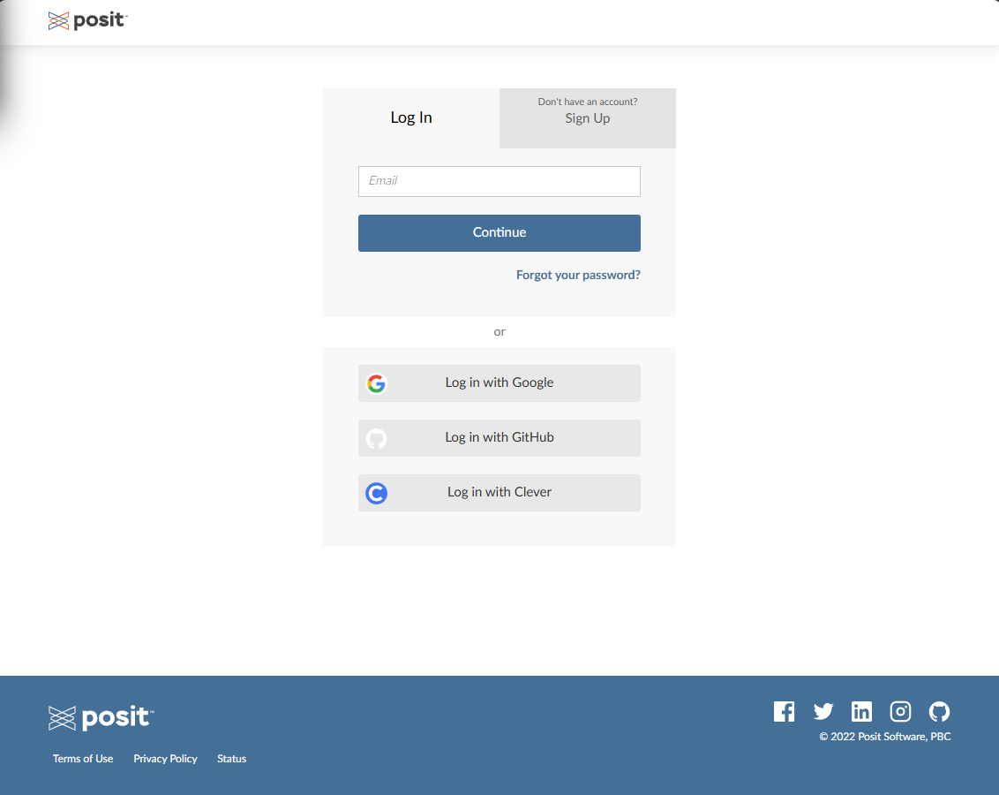
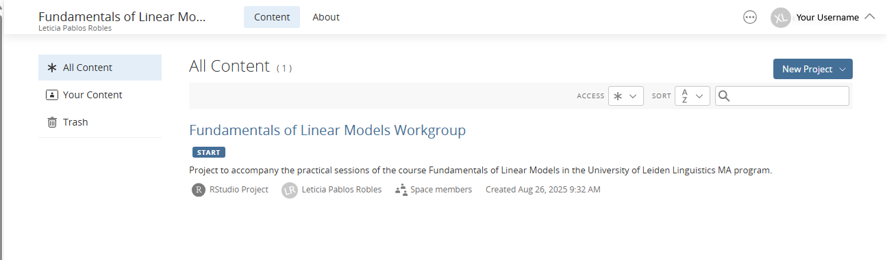

NounAnimacy<-c("animate","inanimate","inanimate","animate","animate","animate")
NounAnimacy[1] "animate" "inanimate" "inanimate" "animate" "animate" "animate" In this session we will familiarize with the basics on the R computing language and the RStudio environment.
By the end of this lesson, you will be able to:
R is a programming language designed for statistical computing and graphics. It is widely used among statisticians, data analysts, and researchers. To work with the programming language, the R interpreter needs to be installed. You can download it from the R homepage, which is:
There are versions available for Windows, Mac and Linux (several distributions). Select the current version (version 4.5.1 at the start of this course) and install it in your personal computer if you want to use it at home.
R installation includes a basic interface environment with a Console to enter commands and write scripts that can be launched using the R.exe or R.app.
This interface is nonetheless quite limited and it is not normally used for data analysis and script development. You can use this language through lots of different applications and environments (e.g. VSCode, JupyterLabs, etc..) . For this course we will introduce the most commonly use development environment for R: RStudio.
RStudio is an Integrated Development Environment (IDE) for R, that makes coding in R and management of data analysis projects easier.
RStudio is a product developed by a company called posit, but that provides a free, open source RStudio Desktop version that can be downloaded here:
As with R, there are versions available for Windows, Mac and several Linux distributions.
Once we launch RStudio, you can distinguish four different areas:
Console: Where R code is executed, you can type commands and see their output.
Source: Where you write and save scripts, Notebooks.
Environments: Includes tabs to inspect variables and inspect the command history as well as access tutorials.
Files/Plots/Packages/Help/Viewer: Includes tabs for file navigation, plotting, package management, and help.

We will familiarize with the interface during the exercises in the Workgroup sessions, but you can find a full description and information the following resources provided in the Posit website:
If you don’t want to install in your own computer, you can use the Posit Cloud environment. that provides a Cloud Free option. This is the approach we will use in this course, so that you can access your work from anywhere.
All assignments will be performed in Posit Cloud where I can follow your progress and assist in case of issues.
In order to use Posit Cloud you need to register for this course following the link below.
https://posit.cloud/spaces/681791/join?access_code=Da9RyPvqyx7Jymq_aHZpKYwBuJJ-45h5bjS1Y7tq
You will be directed to the following page. Select the sign-up option and create your account.

Once you sign-in you should see the course project as in the image below:

Open it and explore the RStudio interface.
R
>That’s the command prompt. When you see this, it means that R is waiting patiently for you to do something!
One of the easiest things you can do with R is use it as a simple calculator, so it’s a good place to start. For instance, try typing 10 + 20, and hitting enter.1 When you do this, you’ve entered a command, and R will “execute” that command. What you see on screen now will be this:
> 10 + 20
[1] 30Not a lot of surprises in this extract. But there’s a few things worth talking about, even with such a simple example. Firstly, it’s important that you understand how to read the extract. In this example, what I typed was the 10 + 20 part. I didn’t type the > symbol: that’s just the R command prompt and isn’t part of the actual command. And neither did I type the [1] 30 part. That’s what R printed out in response to my command.
Secondly, it’s important to understand how the output is formatted. Obviously, the correct answer to the sum 10 + 20 is 30, and not surprisingly R has printed that out as part of its response. But it’s also printed out this [1] part, which probably doesn’t make a lot of sense to you right now. You’re going to see that a lot. I’ll talk about what this means in a bit more detail later on, but for now you can think of [1] 30 as if R were saying “the answer to the 1st question you asked is 30”. That’s not quite the truth, but it’s close enough for now. And in any case it’s not really very interesting at the moment: we only asked R to calculate one thing, so obviously there’s only one answer printed on the screen. Later on this will change, and the [1] part will start to make a bit more sense. For now, I just don’t want you to get confused or concerned by it.
# This is a comment
x <- 5 # Assign 5 to variable x
y <- 10 # Assign 10 to variable y
z <- x + y # Add x and y
print(z) # Print the result One of the big benefits of R in comparison with other statistics packages is its open nature. The functionality is easily extended by groups all around the world by developing libraries that can be easily installed and used.
For this exercise, we use a library (created by Baayen) that contains some utilities and a few sample datasets with linguistics examples.
The library should be loaded to be used using the library() function.
library(languageR)Open RStudio and type the following in the console:
Add 15 and 27
Multiply 6 by 9
Divide 100 by 4
a <- 12
b <- 8
c <- a * b
print(c) Try changing the values of a and b and re-run the code.
Create a dataframe coming up with a sample data of your own (possibly made up) including 4 columns and 6 rows: one column with a factor with two levels, another column with a factor with 3 levels and two columns with numeric values.
You can create a dataframe in several ways, but below you see an example on the steps to create a dataframe based on on vectors.
Create individual variables with vectors including the values
NounAnimacy<-c("animate","inanimate","inanimate","animate","animate","animate")
NounAnimacy[1] "animate" "inanimate" "inanimate" "animate" "animate" "animate" NounGender<-c("feminine","masculine","neuter","masculine","feminine","feminine")
NounGenderNounGender<-c("feminine","masculine","neuter","masculine","feminine","feminine")
NounGender[1] "feminine" "masculine" "neuter" "masculine" "feminine" "feminine" NounLength<-c(6,7,4,5,8,6)
NounLength[1] 6 7 4 5 8 6NounFrequency<-c(638,799,390,569,567,665)
NounFrequency[1] 638 799 390 569 567 665As you can see from the output above, data in the variables NounAnimacy and NounGender are considered as words, or literal strings. The next step is to indicate they are factors.
NounAnimacy<-as.factor(NounAnimacy)
NounAnimacy[1] animate inanimate inanimate animate animate animate
Levels: animate inanimateNounGender<-as.factor(NounGender)
NounGender[1] feminine masculine neuter masculine feminine feminine
Levels: feminine masculine neuterAs you can see by the output produced, now the variables are considered as factors, and Levels indicate the unique values that the predictor takes.
With the variables above, we can now create a dataframe.
Dataexample<-data.frame(NounAnimacy,NounGender,NounLength,NounFrequency)
Dataexample NounAnimacy NounGender NounLength NounFrequency
1 animate feminine 6 638
2 inanimate masculine 7 799
3 inanimate neuter 4 390
4 animate masculine 5 569
5 animate feminine 8 567
6 animate feminine 6 665Basics on R programming:
Chapter 1, Introduction to R, from Bodo Winter’s book.
Sections 2 to 8 on R basic Tutorial by UMC Utrecht
A good starters reference for R is the book “R for Data Science” (Wickham, H., Çetinkaya-Rundel, M., & Grolemund, G. (2023). R for data science. ” O’Reilly Media, Inc.”.). The book is available online freely at:
- [Hands On Programming with R](https://rstudio-education.github.io/hopr/)
- [R for Data Science](https://r4ds.hadley.nz/)Dataframes:
YouTube Video by DataCamp:
https://www.youtube.com/watch?v=9f2g7RN5N0I
https://youtu.be/Nh6tSD4i4qs?feature=shared
https://datacarpentry.org/R-ecology-lesson/how-r-thinks-about-data.html
https://datacarpentry.org/R-ecology-lesson/working-with-data.html
Seriously. If you’re in a position to do so, open up R and start typing. The simple act of typing it rather than “just reading” makes a big difference. It makes the concepts more concrete, and it ties the abstract ideas (programming and statistics) to the actual context in which you need to use them. Statistics is something you do, not just something you read about in a textbook.↩︎